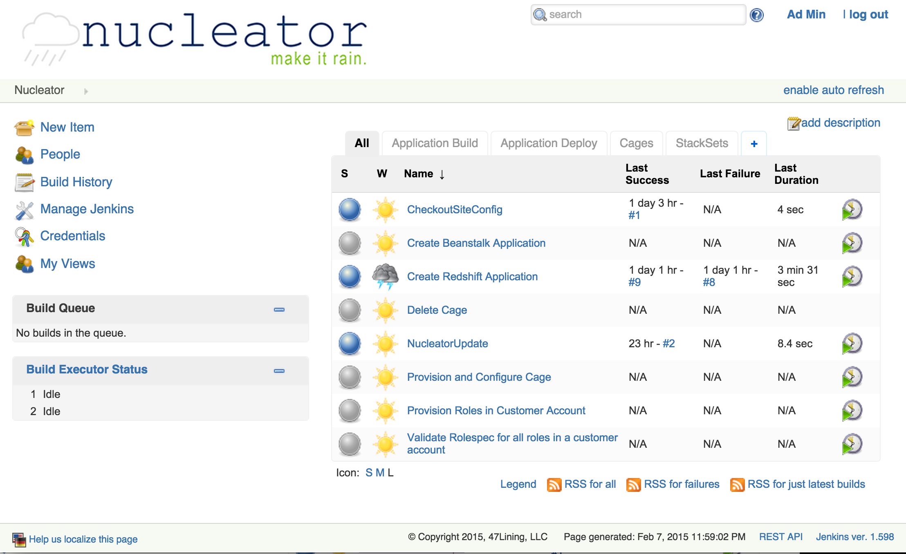
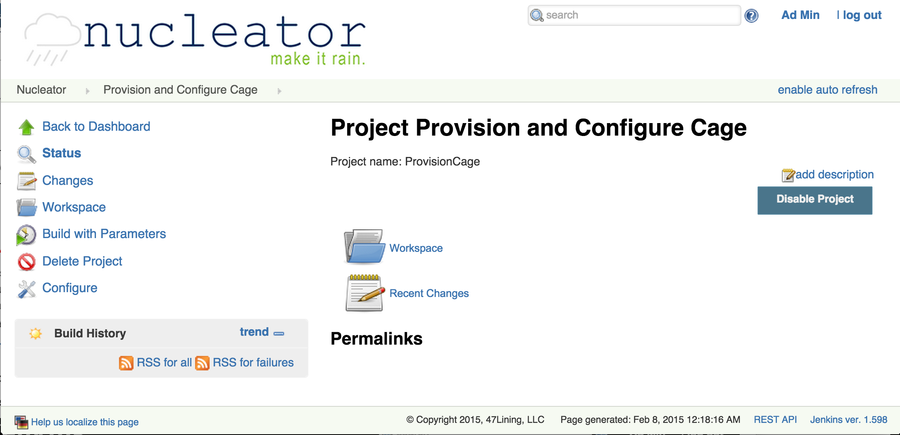
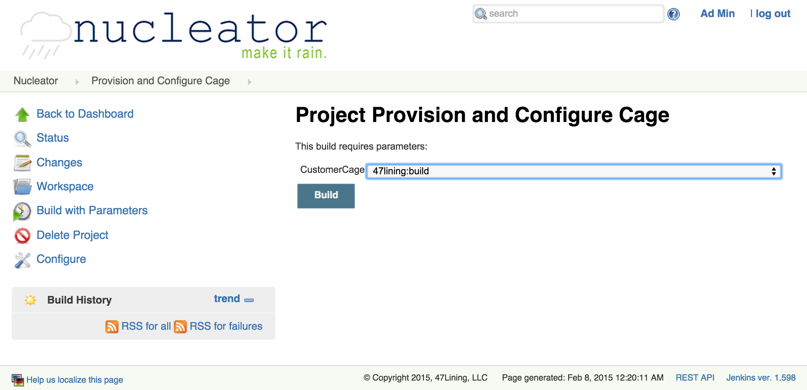
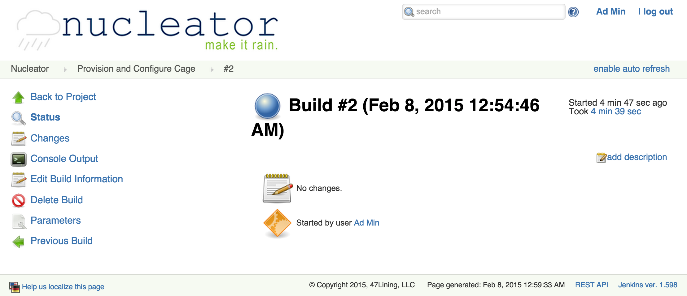
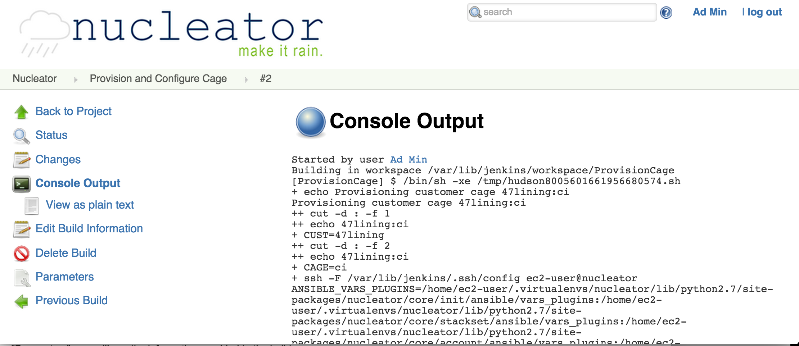
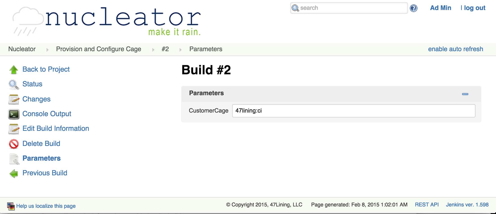

Provision and Configure a Cage
This Nucleator project runs tasks which provision and configure Cages. The provision step causes the infrastructure to exist so that you may deploy applications. The configure step assigns various attributes to that infrastructure representing best-practices around security, network routing, etc. Because of the implementation of this process, the project may be run multiple times for a given Cage. If you update your siteconfig or other internals in the CloudFormation templates, you can run this project to have those updates applied to the Cage.
Login to your Nucleator User Interface
The very first time, it will show a list of Projects. As Cages and other items are created, more projects will appear in the dashboard.

Select the project
You will want to run the project titled "Provision and Configure Cage":

Build the project
Click on that link, then the "Build with Parameters" link, it will let you select the customer and the name of the Cage you wish to use. The list of selections comes from what you have configured in your siteconfig folder in the Git repo:

Verify the operation
Once the build has completed, you will see a new entry in the Build History, click on the link to see the details:

The blue ball indicates the build ran successfully. For details, click on the "Console Output" link:

This will show a lot of intermediate information which can be useful for debugging in the unlikely event of problems, however, the last line should show "Finished: SUCCESS":
If you click on "Parameters", you will see the information provided to the build:

If you need to decommission a Cage, refer to Delete a Cage.